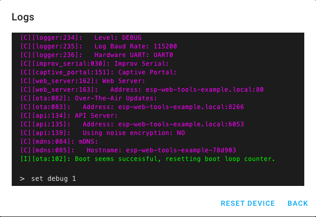

OpenUC2 ESP32 Flashing Tool
OpenUC2 ESP32 Flashing ToolUser-friendly tools to flash/upload the firmware for the openUC2 ESP32 device in the browser:
- Install & update firmware
- Connect device to the Wi-Fi network (work in progress)
- Visit the device's hosted web interface (work in progress)
- Access logs and send terminal commands (work in progress)
Flash the Firmware
This demo will install UC2-ESP. To get started, connect an ESP device to your computer and hit the button (we assume you installed the CH340 or CP2102 driver).
Note: This is only available on Chrome or Microsoft Edge.
Viewing logs & sending commands
ESP Web Tools allows users to open a serial console to see the logs and send commands.

Screenshot showing the ESP Web Tools logs & console